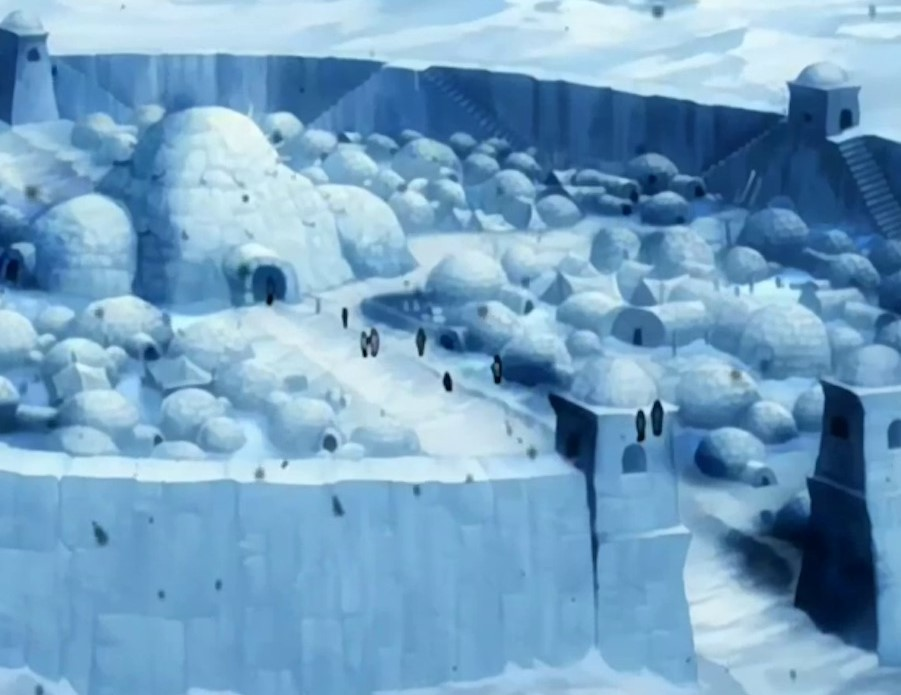

You belong to a tribe of water benders who live in the Foggy Swamp. The Swamp was a vast, mysterious wetland covering a large portion of the southwestern Earth Kingdom. Your tribe migrated to the swamp from the South Pole centuries prior to the outbreak of the Hundred Year War. Life in the Swamp is all you have ever known, and you have not met any other water benders before, but you have heard stories of one water bender from the South Pole traveling with the Avatar and her brother who got trapped in the Swamp years ago. Some of your people even went to aid them in the fight against the Fire Nation. When your people came back, they told you about how the water bender from the South Pole learned how to heal using her bending. The people of your tribe didn't know how to heal using their bending. They made medicines using the flora and fauna of the swamp, but not everything was as effective as healing through bending. You decided that it was going to be your mission to learn how to heal using water bending, and that once you learned how to heal, you would introduce it to the benders of your tribe.
There were two places you could go to learn healing, the Northern Water Tribe or the Southern Water Tribe. The Southern Water Tribe was at the South Pole and was less developed than the Northern Water Tribe, however, it was closer to the Foggy Swamp meaning your journey would be quicker allowing you to come back just in time to save more people from your tribe who were sick or injured. The Northern Water Tribe was farther away at the North Pole, however they were more developed and had more experience in healing, meaning they could teach you more techniques that could help you heal more severe illnesses and injuries that are common in the Swamp.
Where Do You Want To Go?:
Northern Water Tribe
|
Southern Water Tribe |